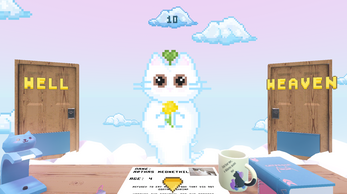

Quest design - solo project | Twine, Unreal Engine 5 implementation in progress
Pre-death grief
Beauty reinvented
Communism fails once again
Action
Pre-apocalypse solarpunk
Branching plotline
Hoc est Corpus is a mid-length quest set in an alternative future. Following a rootless rock opera musician, it focuses on the ethics of incapacitation. While composing this story,
I took great inspiration from ideas of technological determinism and French existentialist philosophy.
Side themes of this quest concern beauty perception, rebelling against one’s fate and the meaning of relationships in life.
Hoc est Corpus is currently implemented in Twine as an interactive fiction piece in Polish. I am working on a blueprint-based implementation in Unreal Engine 4 with a functional
roleplaying system shaping the personality of the protagonist based on player’s dialogue choices.
TTRPG & video game concept - group project | Ren'Py, Unity implementation in progress
Psychological drama
Oneiric antiutopia
Murder mystery
Turn-based combat
Savior Complex started as a short visual novel for the NaNoReNo game jam. It had evolved with time to a 2D game with turn-based combat mechanics inspired by deck-building card games.
In this project, I am responsible for narrative and gameplay design.
Dancing around the Messiah archetype, we tell the story of how will the next generations suffer from our sins. Ultimately, Savior Complex asks if lying to the masses is inexplicable
for maintaining stability - and if the said stability is needed by society.
Presented here version of the Savior Complex game takes form of a TTRPG. With the first rulebook draft made by me, its purpose is to try out the quality of our gameplay design on people
outside the development team without the need of implementing mechanics into the engine.

Doors to Pawradise
Short game - group project | Godot & Dialogic plugin
Light-hearted
Cat afterlife intern simulation
Branching dialogues
Easter eggs
Doors to Pawradise is a light-hearted comedy game made in Godot. Originally a project for a game jam,
Taking place in the witch hunt era, it tells a story of two women rumored to be lovers, forced to act against each other. High Stakes portrays
how members of oppressed minorities have to feast on their brothers and sisters to survive.